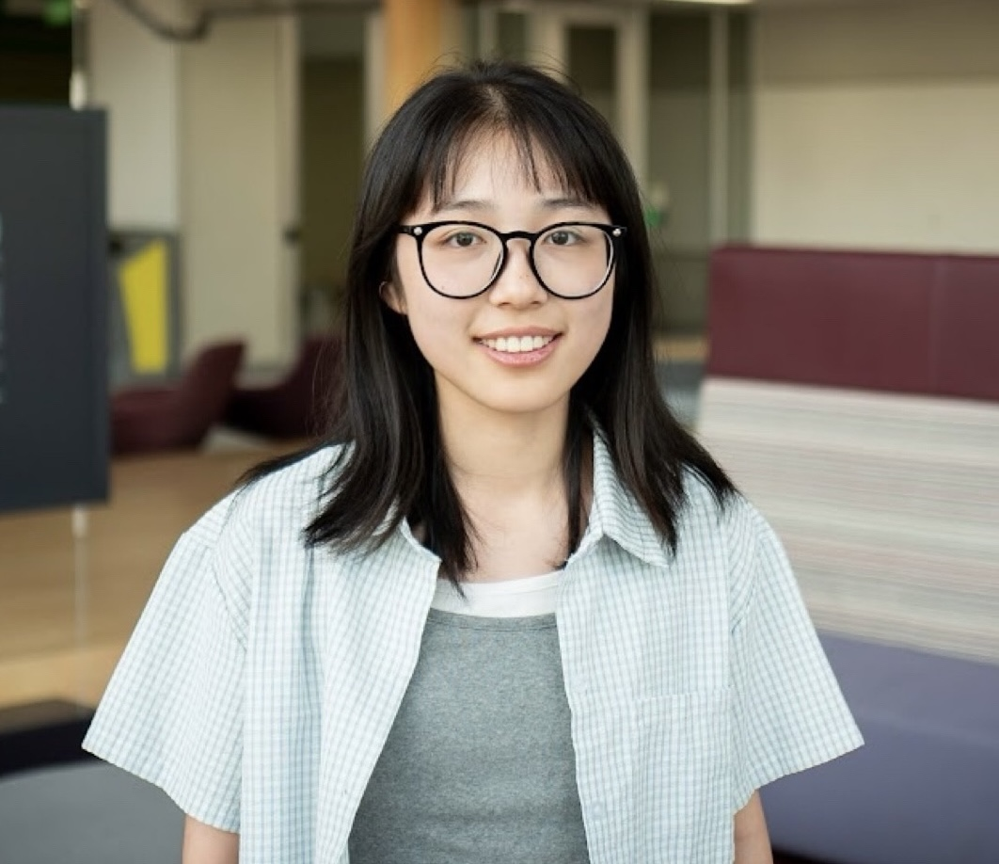

Yingtong (Teresa) Zhou
Ph.D. Student in Electrical & Computer Engineering
Texas A&M University
Research Interests: Protein language models, protein sequence optimization, activation steering, uncertainty-aware machine learning, and federated learning.
About me: Howdy! I am a Ph.D. student in Electrical & Computer Engineering at Texas A&M University, where I work as a Graduate Research Assistant in the BioMLSP Lab advised by Prof. Byung-Jun Yoon. My research focuses on computational methods for property-guided protein sequence design, particularly inference-time control of protein language models. Previously, I studied Computer Science and Cognitive Science at Rice University and conducted research in the Kavraki Lab on drug metabolite prediction.
E-mail: yingtongz@tamu.edu

Education
- Ph.D. in Electrical & Computer Engineering, Texas A&M UniversityAug. 2025 – PresentCollege Station, Texas · Graduate Research Assistant, BioMLSP Lab · Advisor: Prof. Byung-Jun Yoon
- B.A. in Computer Science and B.A. in Cognitive Science, Rice UniversityAug. 2021 – May 2025Houston, Texas · GPA: 3.80 / 4.00
Research Experience
- Graduate Research Assistant, BioMLSP Lab — Texas A&M UniversityAug. 2025 – PresentAdvisor: Prof. Byung-Jun Yoon
Research on property-guided protein sequence optimization using protein language models, inference-time activation steering, uncertainty-aware selection, and privacy-preserving federated collaboration.
- Research Assistant, Kavraki Lab — Rice UniversityMay 2024 – May 2025Advisor: Prof. Lydia E. Kavraki
Developed methods and datasets for drug metabolite prediction, including SMILES-based modeling, transfer learning, probability filtering, and rule-based post-processing.
Publications & Preprints
* denotes equal contribution.
-
Beyond Global Contrasts: Paired-Unit Activation Steering for Context-Aware Protein Sequence Design.
Manuscript submitted to RECOMB 2027 (under review).
[Paper] -
FEAST: Federated Activation Steering of Protein Language Models for Collaborative Protein Sequence Optimization.
Workshop on Integrating Generative and Experimental Platforms for Biomolecular Design, NeurIPS 2026.
-
Optimizing Protein Design Through Uncertainty-weighted Steering of Protein Language Models.
European Conference on Computational Biology (ECCB 2026), oral presentation.
[Paper] -
Improving Metabolite Prediction Performance with Probability Filtering and Model Integration.
International Conference on Intelligent Biology and Medicine (ICIBM 2025), poster presentation.
[Poster] -
Thought Graph: Balancing Specificity and Uncertainty in LLM-Based Gene Set Annotation.
IEEE International Conference on Healthcare Informatics (ICHI 2025).
[Paper]
Honors & Awards
- President's Honor Roll, Rice University (2024).
Technical Skills
Programming: Python, Java, C/C++, MATLAB, JavaScript/TypeScript, HTML/CSS, SQL.
Machine learning & scientific computing: PyTorch, TensorFlow, DeepSpeed, RDKit, ProteinMPNN.
Tools: Git, Linux, Docker, React, Node.js, GraphQL, REST APIs.